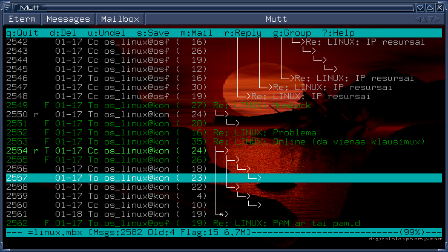
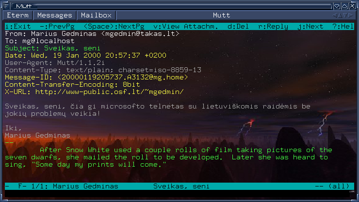

Mutt -- pati geriausia ið mano matytø paðto programø. Tiesa, mûsø skoniai gali skirtis. Mutt yra skirta ne tik Linux'ui, bet ir visai Unix operaciniø sistemø ðeimai ir tæsia geriausias Unix tradicijas. Viena ið ðiø tradicijø -- „programa turi daryti vienà darbà ir daryti já gerai“. Mutt darbas -- ne siøsti ir gauti paðtà, bet pateikti já vartotojui. Pilnavertæ Unix paðto sistemà sudaro kelios nepriklausomos programos:
Mutt dirba tekstiniame reþime, tad ji yra universalesnë (pvz., galima paðtà skaityti prisitelnetinus prie kito kompiuterio) ir patogesnë (èia jau kaip kam :-). Ðtai kaip ji atrodo:

1 pav.
Mutt laiðkø sàraðas. Graþø fonà bei trimaèius mygtukus virðuje pateikia
Eterm terminalo programa X Window sistemai, rëmelius bei lango
mygtukus -- IceWM langø menedþeris (window manager).
Ið karto galime pastebëti kelis privalumus:

2 pav.
Mutt laiðko perþiûra. Dël rëmeliø bei fono þr. paaiðkinimà prie ankstesnio
pav. Vienas dalykas, kurio èia nesimato -- skirtingo lygio citatos rodomos
skirtingomis spalvomis, o www/el. paðto adresai tekste iðryðkinami. Visa tai,
þinoma, galima konfigûruoti.
Vienas ið maloniø Mutt bruoþø -- puikus el. paðto standartø palaikymas. Todël su lietuviø kalba paraðytais laiðkais problemø nebûna. Beveik. :) Problemø gali iðkilti, jei laiðko siuntëjas paþeidþia standartus, pvz., pasiøsdamas lietuviðkà laiðkà, paraðyta naudojantis ISO-8859-13 lentele, bet antraðtëje uþraðydamas neteisingà kodavimo lentelæ (paprastai ISO-8859-1).
Visais kitais atvejais Mutt nëra lygiø. Tereikia pasiekti, kad pati sistema þinotø ISO-8859-13 lentelæ (ðiais laikais visos Linux distribucijos turi jà apraðantá failà /usr/share/i18n/charmaps/ kataloge), uþkrauti ðià lentelæ atitinkantá ðriftà (tai priklauso nuo konkreèios situacijos -- ar tai bus Linux konsolë, ar xterm langas, ar Microsoft Telnet programa) ir apie tai praneðti Mutt'ui komanda
:set charset=iso-8859-13
Patogiausia, þinoma, ðià komandà áraðyti á .muttrc konfigûraciná failà. Tokiu atveju dvitaðkio eilutës pradþioje nereikia.
Mutt 1.1 ir naujesnës versijos turi dar vienà kintamàjá -- send_charset, kuris nurodo, á kokià lentelæ reikia perkoduoti iðsiunèiamus laiðkus (tuo atveju, kai visi simboliai laiðke patenka á 7 bitø ASCII lentelæ, pastaroji ir bus nurodoma, nes ji yra universaliausia ir plaèiausiai palaikoma). Nuo Mutt 1.3 versijos galima kaip send_charset reikðmæ nurodyti kelias koduotes, atskirtas dvitaðkiais. Tuomet Mutt pasirinks pirmàjà, kuria galima atvaizduoti visus jûsø laiðke naudojamus simbolius. Pavyzdþiui, nurodþius
:set send_charset="us-ascii:iso-8859-1:iso-8859-13:utf-8"
laiðkai be lietuviðkø raidþiø keliaus us-ascii arba iso-8859-1 koduote.
Pastaba dël versijø: Mutt versijà sudaro trys skaièiai x.y.z. Versijos, kuriø vidurinis skaitmuo nelyginis, yra „eksperimentinës“, skirtos tik labai dràsiems, norintiems naujausiø galimybiø bei nebijantiems galimø problemø vartotojams.
Jei jums iðkils problemø su „Windows-1257“ lentele paraðytais laiðkais, pabandykite á savo .muttrc failà áraðyti ðtai tokià eilutæ:
charset-hook windows-1257 cp1257
Beje, Mutt nuo 1.3.13 versijos gali ðnekëtis su jumis ne tik angliðkai, bet ir lietuviðkai (arba kitomis kalbomis). Tereikia nustatyti shell kintamàjá $LANG, pvz.:
$ export LANG=lithuanian
Pastaba: daþnai þmonës prieðtarauja lietuviðkø raidþiø vartojimui laiðkuose, dël to, kad jie skaito paðtà prisijungæ per telnetà prie, tarkime, universiteto serverio. Að padariau toká eksperimentà: ið Windows 98 kompiuterio su standartine Microsoft Telnet programa prisijungiau prie savo Linux sistemos ir pasileidæs Mutt'à pabandþiau sau iðsiøsti laiðkà su lietuviðkomis raidëmis. Rezultatà matote antrame paveiksle virðuje. Tiesa, minëtame Windows 98 kompiuteryje buvo ádiegtas LitWin98 paketas (ið www.kada.lt/litwin/), tad gal tik su juo Telnet programa sugeba parodyti lietuviðkas raides? Nors mano nuomone ðis paketas turëtø bûti instaliuotas kiekviename kompiuteryje -- jis yra nemokamas bei leidþia naudotis visø mëgstamu „Baltic“ (raidës vietoje skaièiø) ir mano mëgstamu „Programmers“ (miræs klaviðas + lotyniðkos raidës) klaviatûros iðdëstymais. Aèiû autoriams!
Marius Gedminas
2000 vasario 17 d.
atnaujinta 2001 geguþës 17-18 d.